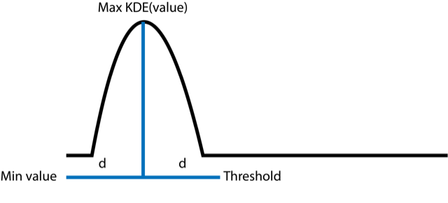
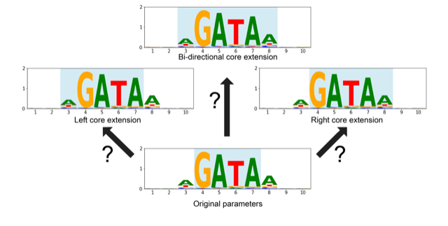

Optimization¶
CtrlF-TF uses multiple parameters when calling sites that one has to select during the alignment step including:
Core definition
Number of gaps in the k-mer data
Threshold to use when calling binding sites
CtrlF-TF has 2 classes to optimize parameters and select thresholds by benchmarking the performance of classification of sequences.
ClassifiedSequences
Optimize
ClassifiedSequences acts as a helper class, transforming an input dataframe of values and sequences into a dataframe with the required columns for the Opimize class. API details on these classes can be found in Library API.
The ClassifiedSequences Class¶
This class acts as a helper class for preparing input data to the Optimize class. Specifically, it takes a dataframe (with or without headers) in the form of:
Value |
Sequence |
|---|---|
50000 |
CAATCG… |
49554 |
ATCGAT… |
… |
… |
It returns a dataframe with the following format:
Value |
Sequence |
Group |
|---|---|---|
50000 |
CAATCG… |
+ |
49554 |
ATCGAT… |
- |
… |
… |
… |
It can be initialize with the classify_from_dataframe method.
import pandas as pd
import ctrlf_tf as cftf
example_dataframe = pd.read_csv("file_location")
result = cftf.ClassifiedSequences.from_dataframe(example_dataframe,
sequence_start = 1,
sequence_end = 36)
Specifying the sequence_start and sequence_end parameters internally apply a slice operation to all DNA sequences. If using a PBM data source, a typical sequence probe is 60bp long with the sequence starting at the second base and ending at the 35th (1-based coordinates). The arguments for the from_dataframe method are 0-based inclusive and exclusive. CtrlF-TF does not assume a particular subsection by default, and will classify based on the entire sequence unless specified otherwise.
It is recommended to perform classification based on the same subsection that the k-mer data is generated from.
By default, the classification uses a “kde_z4” method to label probes as positive, negative, or ambiguous (‘+’, ‘-’, ‘.’). This performs a gaussian KDE using scipy.stats.gaussian_kde and selects the input value from the distribution with the highest output in the KDE function. The distance from the smallest value to this highest density value is added to the highest density value to calculate one of the thresholds. The result is to flip the left tail around the highest density value to capture the distribution.
The other threshold is the modfied z-score based of medians of 4. The maximum of the two is selected as the positive threshold and the minimum of the two is the negative threshold.
However, one can also specify just using modified z-scores as thresholds. The syntax for this would be:
cftf.ClassifiedSequences.from_dataframe(example_dataframe,
sequence_start = 1,
sequence_end = 36,
method = "z-score",
z_negative = 3,
z_positive = 4)
The ClassifiedSequences class contains several attributes for the final result dataframe and the meta data on the input.
result = cftf.ClassifiedSequences.from_dataframe(example_dataframe)
# Attributes
result.dataframe # Pandas DataFrame output
result.negative_threshold # Tuple of the definition and value
result.positive_threshold # Tuple of the definition and value
result.version # Verson of CtrlF-TF used
The method save_to_file saves the attribute information in text format. Using load_from_file initializes a new instance with the information from a previously saved ClassifiedSequences.
result.save_to_file("classified_sequence_result.txt")
new_object = cftf.load_from_file("classified_sequence_result.txt")
Optimization of AlignParameters¶
The Optimize class takes a set of AlignParameters and benchmarks their performance against sequences groups into “+” and “-” categorgies. It uses a form of steepest ascent hill-climbing to search the parameter space.
Given an input of a classified sequence dataframe and an initial set of AlignParameters, for each set of:
0 k-mer gaps
0-1 k-mer gaps
0-2 kmer gaps
Optimize will run CtrlF against the classified sequences. It will then generate a partial AUROC up to a given threshold (default = 0.01 false positive rate) as an initial performance metric. If the alignment model is non-palindromic (palindrome == False), then the model will be extended left, right, and in both directions. Each of these are compared and the max partial AUROC is chosen as the best parameter set.
If the best parameter is an extended parameter, the process repeats until the initial parameter is not improved upon via extension. The top partial AUROCs for each kmer gap set are compared to chose the k-mer gap parameter.
For a model assumed to be palindromic (palindrome == True), then the model is only extended in both directions during optimization.
Suppose one had classified a dataset previously. The syntax for running the Optimizer would be:
import ctrlf_tf as cftf
classified = ClassifiedSequences.load_from_file("classified_result.txt")
params = cftf.AlignParameters(kmer_file = "example_kmer_file.txt",
pwm_file = "example_pwm.txt",
core_start = 4,
core_end = 7)
optimized_params = Optimize(params,
classified.dataframe)
After initialization, the Opimizer contains multiple attributes detailing the results. To access which parameters were tested, their performance, and the top results:
# AlignParameters of the top results
optimized_params.optimal_parameters
# DataFrame of all parameters examined up to the top choice
optimized_params.parameter_dataframe
The parameter dataframe contains the followng information:
ID: A unique number associated with the parameters.
Kmer_Gap_Limit: The gap_limit parameter used
pAUROC: The partial AUROC based on the FPR threshold given.
Score_Threshold: Score at the given FPR threshold
Core_Start: core_start parameter
Core_End: core_end parameter
Core_Gaps: core_gaps parameter
The pAUROC reported will be the partial AUROC. For example, given a FPR threshold of 0.01 (default value), the max reported value has an upper limit of 0.01.
The ID values of the parameter dataframe can be used to retrieve the TPR and FPR dataframe used to generate the pAUROC values. This can be done using the .tpr_fpr_dictionary attribute where each key is an ID from the dataframe.
# Access the TPR FPR dataframe for ID = 0
optimized_params.tpr_fpr_dictionary[0]
Note
All of the figures and example tables are examples and not from real datasets.